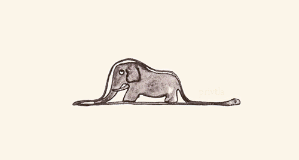

About Author

Rhio Kim
blog: http://rhio.tistory.com
twitter: @rhiokim
github: rhiokim
자바스크립트를 좋아하는 인간입니다.
- Arduino
- Node.js
- HCI
About this Article
Date Released:
Tuesday, January 15 2013 11:15 PM2013 하루프레스 계획
하루프레스의 2012년은 약 6개월에 걸쳐 개인의 욕구에 의해 만들어진 정적 블로그 엔진이였습니다.
개인의 오픈 소스 프로젝트를 널리 알릴 수 있는 기회를 마련해주신 분들에게 감사를 드립니다.
마크다운과 노드(Node.js)가 너무 좋았고 위지윅 방식의 포스팅이 너무 싫었습니다.
그래서 시작했습니다. 옥토프레스가 있었지만 루비였고 블로그 도구를 커스터마이징 하기 위해서 새로운 프로그래밍 언어를 배우는 것은 개인적으로 무의미했습니다.
그렇게 6개월 동안 너무 즐겁게 만들었습니다.
많은 분들이 하루프레스를 사용해주시고 많은 피드백을 보내와 주셨습니다. 뿐만 아니라 컨퍼런스와 모임을 통해서 하루프레스를 공유할 수 있는 기회를 만들어 주셨습니다.
모든 분들께 감사드립니다.
이렇게 v0.9.x 까지 출시된 하루프레스는 지난 한해 정적 블로그 엔진으로써 기본적인 모습을 갖춰 갔고 또한 공개되지 않은 많은 아이디어가 수집되었고 가능성을 테스트하는 한해였습니다.
하루프레스 비젼
하루프레스의 철학은 변하지 않습니다.
블로그가 필요한 사람이 아니라 콘텐츠를 작성하기 위해 불필요한 일들을 간소화 하려고합니다. 그리고 모든 환경에서 동일한 경험으로 콘텐츠를 퍼블리싱할 수 있습니다.
하루프레스를 사용하는 여러분은 생각과 유입되는 모든 정보들의 기록을 마크다운으로 작성하면 됩니다.
그 콘텐츠가 신문기자의 기사가 되거나 음악가의 악보가 되거나 건축가의 설계사가 되거나 강연자의 프리젠테이션이 되는 것은 하루프레스가 해줄 것입니다.
더불어 아래와 같은 두가지 생각을 추가할 예정입니다.
- 사용자 콘텐츠 에코 시스템 & 마켓 시스템
- 콘텐츠를 기반으로 한 웹 애플리케이션 메니지먼트 시스템
하루프레스 1.0 는 어떤 모습일까?
- 마크다운 프리젠테이션 안정화
- 하루프레스 크로스 플랫폼 (supported Linux, Mac 10.8)
- 누구나가 손쉽게 테마를 만들 수 있도록 템플릿(테마) 고도화
- 사용자 플러그인 고도화
- 하이브리드 콘텐츠 퍼블리셔
- 인스턴트 마크다운 에디터
- GUI 방식의 하루프레스 관리도구
- 비밀 기능 1
- 비밀 기능 2
하루프레스의 1.0 은 꾀 멀리 있습니다. 제품으로써 믿고 쓸만하다는 것은 버그가 없이 제대로 동작한다는 것을 보장해야 하는데 사실 그건 1.0까지는 장담하고 싶지가 않습니다. (이건 또 뭔 강아지 소리인가?)
물론 최소한의 안정화를 위해 노력은 하고 있지만 목표를 넘어서 과한 안정화보다 1.0 의 모습으로 빨리 달려가는게 하루프레스의 목표중에도 하나 입니다.
이유라면 현 시점에서 하루프레스와 유사한 도구들이 굉장히 많이 쏟아졌고 대체할 수 있는 상품이 많아 졌습니다. 하지만 여전히 하루프레스가 같은 몇가지 장점이 있고 더불어 1.0 에서 기대하고 있는 것은 컨텐츠 관리 시스템의 변화의 필요성과 웹의 가능성 그리고 노드 기반의 좋은 사례를 만들고 싶은 개발자로써의 욕심이기 때문입니다.
컨트리뷰터가 늘어나면 또 이야기는 달라지겠죠? _^
하루프레스 2013

2013년은 이미 시작되었고 연초에 예정된 회사 업무와 개인적인 업무로 인해 리프레쉬 기간을 조금 두었고 이제 다시 달릴 준비가 거의 완료되었습니다.
쉬는 동안에도 템플릿 고도화에 대한 전략과 크로스 플랫폼 지원을 위한 빌드 테스트, 인스턴트 마크다운 에디터와 GUI 방식의 관리도구를 위한 구조 설계와 코드 테스팅은 완료한 상태입니다.
올 한해도 열심히 달리겠습니다. 국내 최고의, 세계 최고의 그런 수식어가 필요한 하루프레스가 되고 싶지는 않습니다. 그냥 개발자에게 익숙하고 일반인에게도 익숙해질 마크다운 포맷으로 손쉽게 기록하고 그것을 원하는 형태로 표현할 수 있는 도구로 만들어 보렵니다.